| 日付 | 2019年10月27日（日） |
|---|---|
| 山域 | 御坂･天子山塊 |
| メンバー | 家族（妻、長女・8歳、長男・6歳） |
| 山行形態 | 子連れ日帰り |
| アクセス | 車 |
| ルート (Map) | 檜峰神社駐車場 (9:18) - (9:48) トビス峠 - (10:35) 大栃山 (10:44) - (11:26) トビス峠 - (12:16) 神座山 (12:57) - (13:17) 下降点 - (14:03) 檜峰神社駐車場 |
あまり天気の良くない日曜日、雨は降らなさそうなので、山に行くことにする。
比較的天気が良さそうな西の方から山を探し、大栃山という山を見つける。
マイナーな山だが、台風後も歩いている記録があったので、
登山道やアプローチは問題ないと判断し、行ってみることにする。
檜峰神社駐車場へのアプローチは分かりにくい。車のナビは頓珍漢なルートを出している。
御宿農園の看板があるところから細い道に入っていくと、大栃山のゲートに到着する。
このゲートは開けて中に入れる。
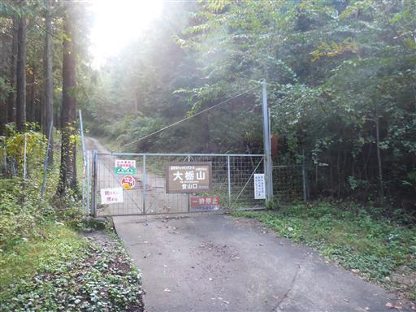
小さな川なのだが大量の水が勢いよく流れている。
台風の影響なのだろうか？
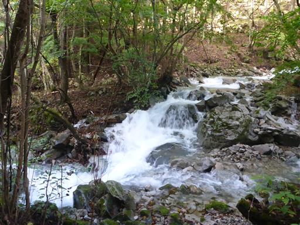
檜峰神社の駐車場に到着する。標高1090m。
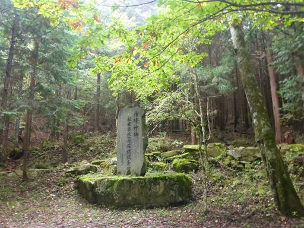
ここはかつてキャンプ場だったようだ。「ゴミは穴を掘って埋めるように」などの
注意書きがあることから、かなり古い設備のようだ。
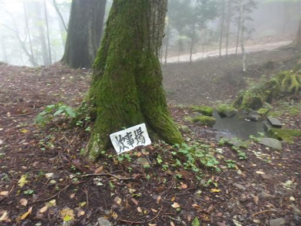
登山開始前から周囲は雲に覆われている。
もう少し好天を予想していたのだが…
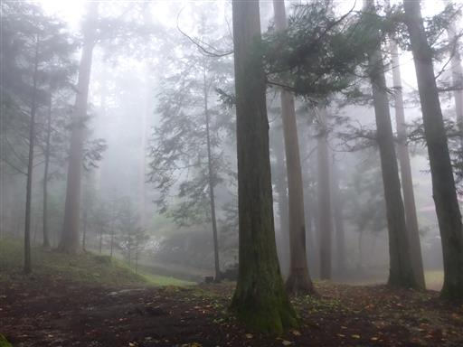
水が流れているのだが、水量が多すぎて半分こぼれ落ちている。
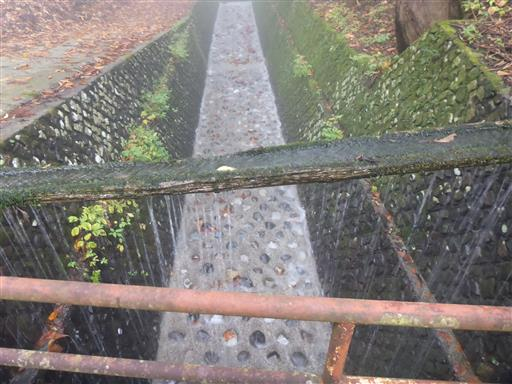
登山前に檜峰神社に参拝する。
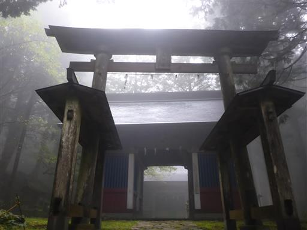
山奥深くの誰も訪れなさそうな場所にある割には、ずいぶん立派な神社だ。
地面は苔生しており、参拝者はあまりいなさそうだ。
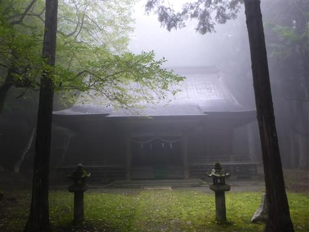
参拝を終えたら登山開始。まずはトビス峠に向けて登って行く。
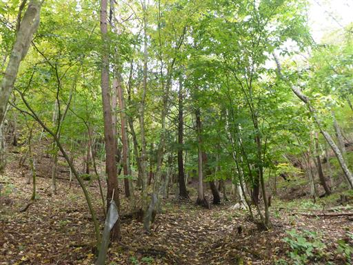
足元にはキノコが多い。
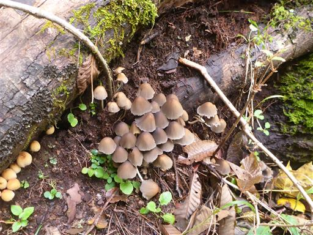
あっというまにトビス峠に到着。変わった名前の峠だ。
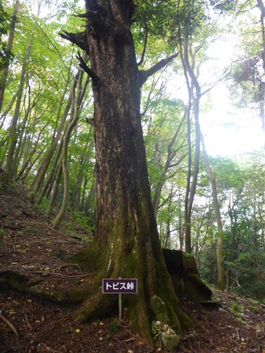
まずはここから大栃山を往復する。そこそこ急な斜面を登って行く。
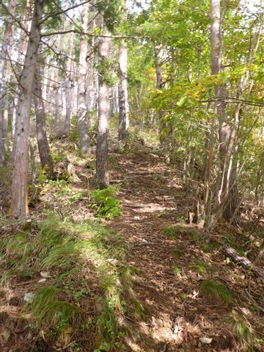
雲の上に出て視界が広がる。少しでも青空が見えると気分が良い。
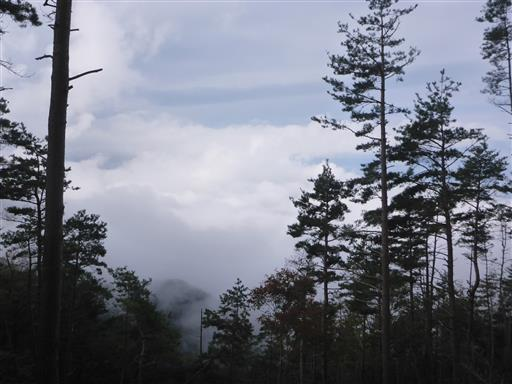
登山道沿いに多くの木が倒れている。
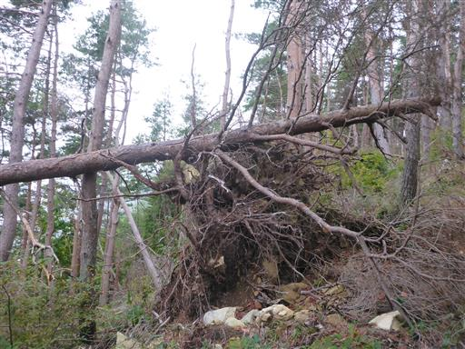
こちらの倒木はまだ新しそうだ。小さな植物が倒木に巻き込まれて持ち上げられている。
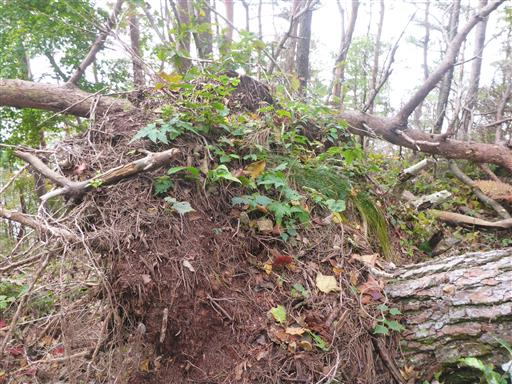
大栃山に到着。標高1415m。
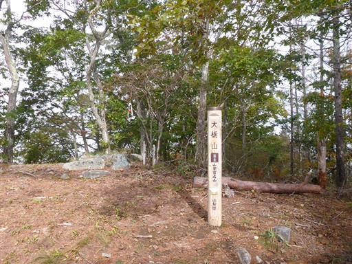
樹木に覆われた狭くて地味な山頂。
まだ昼食には早いので、10分ほど休憩したら次なる目的地の神座山に向かう。
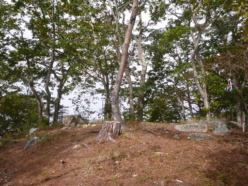
トビス峠まで戻ったら今度は神座山方面に向かう。
ここからは急斜面が続く。
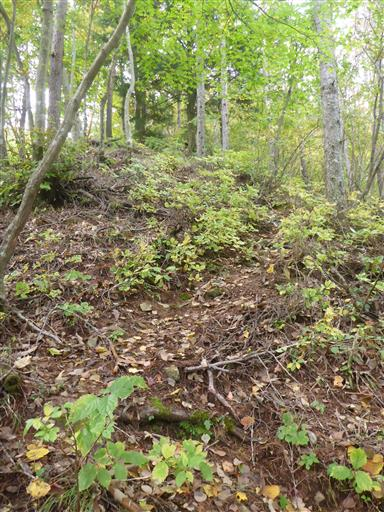
葉っぱのお面で遊ぶ。
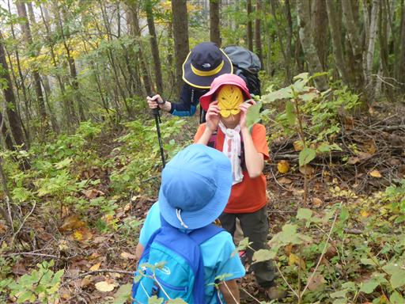
登山道は再び雲に覆われだす。
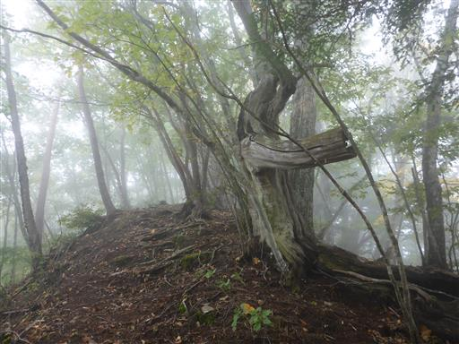
度々足元にきれいなコガネムシを見つける。どのコガネムシもほとんど動かない。
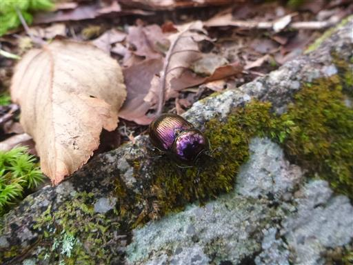
キシャヤスデもちらほら見かける。大量発生はしていない。
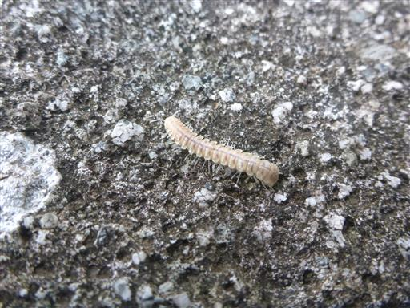
神座山に到着。標高1474m。
こちらも地味なピークだ。
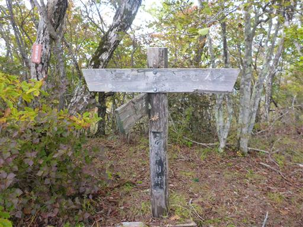
山頂からは三角形の格好良い釈迦ヶ岳の姿が辛うじて見える。
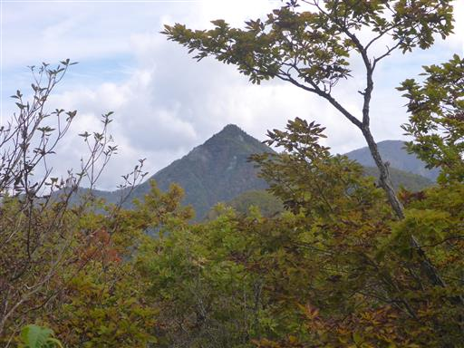
なんと富士山も見えている。木が邪魔でほとんど見えないが…
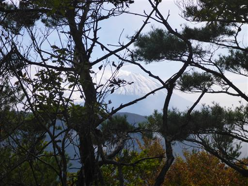
雲に覆われた登山口から考えると、素晴らしい展望だ。
ここで昼食休憩をとることにする。
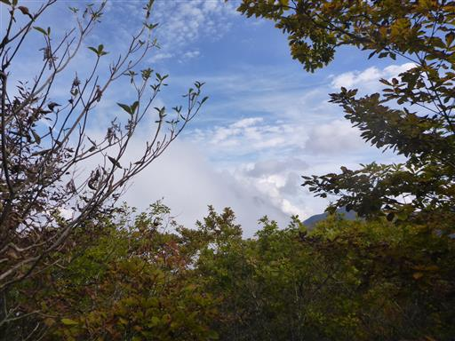
下山開始。この尾根道は釈迦ヶ岳に通じていて、よく整備されている。
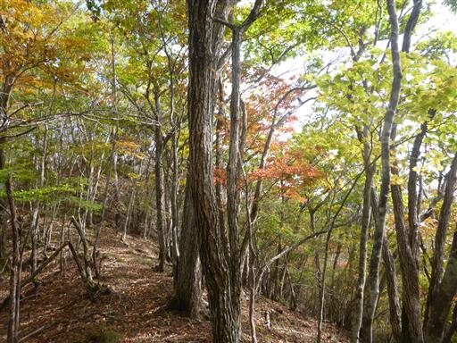
途中で左折して檜峰神社に下るルートに入る。
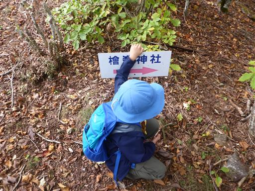
この道はあまり歩かれていないのか、道が少々わかりにくい。
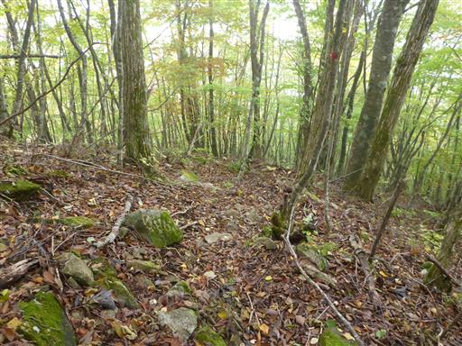
一際目を引く大きな木が立っている。
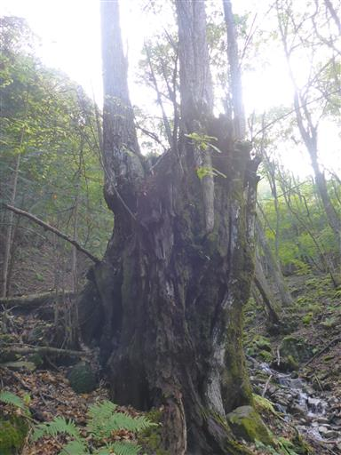
小さな沢を渡る。
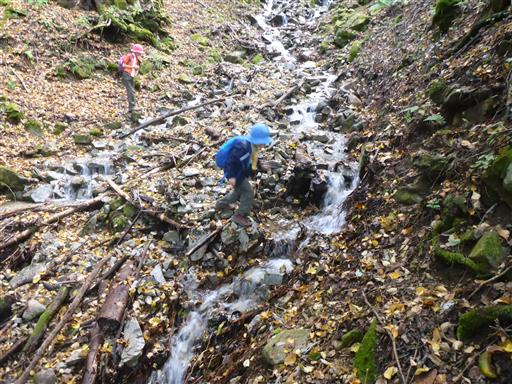
檜峰神社に戻ってくる。
出会った登山者は一組、静かで地味な山だった。
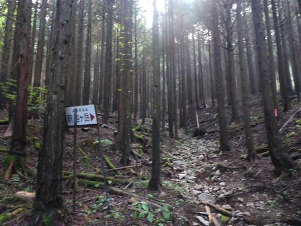